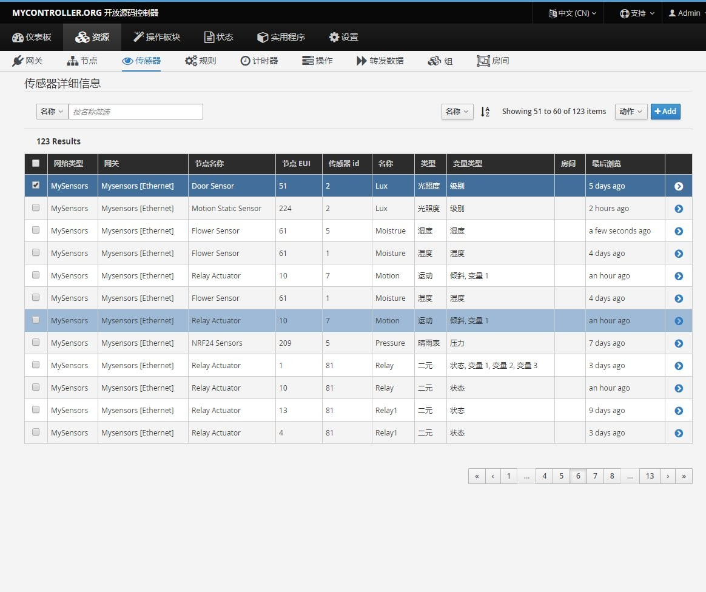

title: Mycontrol date: 2018-09-01T12:54:30.859Z tags: [mysensor-中文站]
1.1. categories: [mysensor]
网关控制器是针对网关消息处理的核心，负责分配ID，非休眠设备、智能休眠设备的OTA软件，官方有提供windows的调试控制器，另外部分智能平台支持网关功能，目前homeassistant未引入全部功能，其它软件不作详细介绍，本文针对官方推荐的MYCONTROLLER介绍
1.2. 安装程序
项目为java程序，推荐使用docker安装，对于高手，建议自行安装，项目地址为：https://www.mycontroller.org/#/downloads
针对新手或者不折腾的你可以使用以下docker镜像，
N1 arm架构的请使用以下命令启动：
docker pull huex/mctll:armbian
docker run --network=host -d \
--restart=always \
--name mysensor\
huex/mctll:armbian
x64架构的请使用以下命令启动：
docker pull huex/mctll:latest
docker run --network=host -d \
--restart=always \
--name mysensor\
huex/mctll:latest
自定义配置文件在镜像内部/mctll/conf/mycontroller.properties,可拷贝自定义映射目录。建议配置mysql存储！ web端口1043
1.3. 基础使用
安装完成后，使用admin/admin登入，界面如下，
{kind=link}
添加网关
资源列表，网关部分，添加网关--ADD，
{kind=link}
注意添加网关为Mysensors，非mycontrroller,类型TCP。在线检查频率为检测传感器存活的操作时间，一般来说，传感器不具备被动检测，仅限于非sleep节点，建议时间设置较长，10小时或者1天，但针对少量活动的节点，节点状态仍然会是不可用。
节点列表
节点为每一个node的节点，节点资源目前未能提前分配（需要指定无线地址？）均由子节点启动时提交presentation信息，控制器自动对应生成节点相关消息，此列可对节点控制OTA，重启和刷新presentation信息，功能仅限于非sleep节点，一般用于有供电的继电器和节点进行操作。
{kind=link}
节点可以编辑，通常编辑其版本，固件，以方便针对性升级，比如开关节点，你可以有针对性的升级其版本。
{kind=link}
传感器列表
- node-chlid项目,节点下的对应子项，通常由presentation提供，比如单一SI7021温湿度节点，子项目为温度，湿度，电压，三个传感器项目
针对可控制的子项，比如继电器它可以 提供操作处，对于非可控的，提供历史记录。
传感器均可以编辑，主要提供给mysx控制器分区和一些简单的自动化操作归类使用。 
{kind=link}